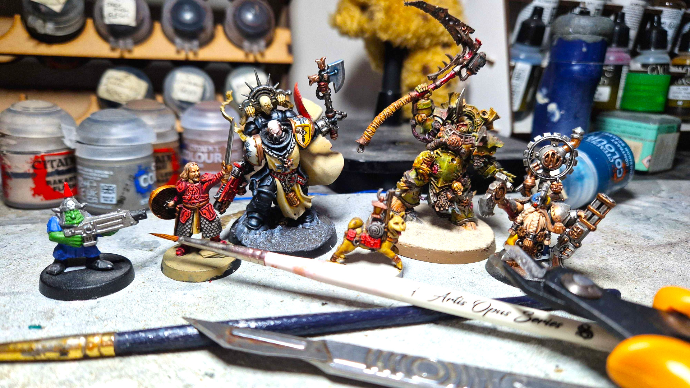
Painting miniatures - the complete beginner's guide
Whether you're creating a wargame army, upgrading a board game, or just chilling out, painting miniatures is one of life's great pleasures. The Wargamer team has built and painted over 3,000 minis of all shapes and sizes since the early 2010s, and we've pooled all that experience into this beginner's guide! Read on for a no-nonsense explainer of how to paint miniatures, from clipping parts through to a finished display piece - full of rock-solid techniques, recommended tools, and essential tips.
We'll use examples from Games Workshop's Warhammer ranges of models - primarily from the Warhammer 40k factions and Age of Sigmar armies - but this tutorial includes everything you need to learn how to paint miniatures of any kind that your heart desires.
If you run into any problems - and especially if you'd like to share your progress pics - come join the mini painting discussion in our Discord community! We're on hand to help you through any painting roadblocks, and admire your lovely models.
How to paint miniatures:
- The golden rules - how to get the most out of your hobby.
- The toolkit - the best beginner paints, brushes, and tools to use.
- Basic painting - assemble and paint your first table ready minis.
- Intermediate painting - level up with edge highlights and basing.
- Advanced painting - add flair with fine details and effects.
- Mini painting FAQ - extra techniques, tips, and troubleshooting.
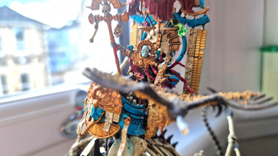
1. Golden Rules for painting miniatures
Over our 15 years of painting minis, we've helped dozens of friends and fellow tabletop gamers make their start in miniature painting - and in that time we've identified some really common roadblocks and pain points that can sap the enjoyment from the hobby and even put folks off altogether.
Maybe you mess up your nice expensive new brush and can't afford to replace it; maybe your first couple of models come out blobby and disappointing, and you give up in dismay; maybe you excitedly buy $1,000 worth of models and then get overwhelmed by the workload. All traumatic, all avoidable. To help slay those demons, we've come up with these two simple rules to hold close as you start painting:
- Don't rush - While some methods are faster than others, mini painting requires patience - take your time and you'll have more fun overall, trust us.
- Paint for yourself - Don't panic; don't chase perfection; just paint what you like, and compete only with yourself.
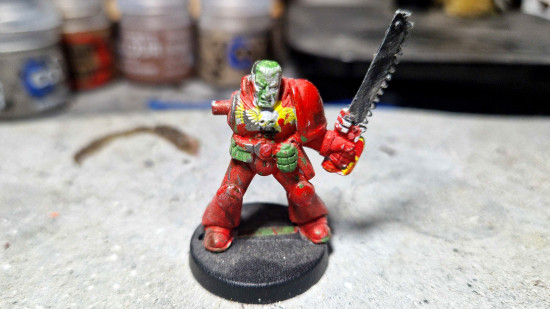
Don't rush
At both the 'macro' level of which miniatures you buy, and the 'micro' level of how you approach learning to paint, one of the biggest pitfalls is going too hard, too fast.
In the first case, the bigger your pile of unpainted or unbuilt minis, the more demoralized you're going to be - mini painting is a hobby, not a chore, so don't hurry to give yourself a big To Do list. And, in the second case: whatever method you're using, you will get better results by taking things slowly, experimenting, and trying out different techniques one at a time.
Your first models - like editor Alex's unfortunate Space Marine above - probably won't be very good. That's fine. Gradually getting the basics down over several models will build your confidence massively; trying to smash out a perfect competition mini, or an entire army, in record time, will most likely result in deflation and disappointment.
Take your time, thin your paints, and - as Bob Ross said - learn from all those "happy little accidents".
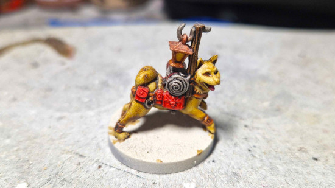
Paint for yourself, and nobody else
Everyone in the miniature painting hobby has different preferences, priorities, and things they enjoy most. Chances are you already know what attracts you to it: maybe you need a way to relax in the evenings; maybe you want to start playing wargames with friends and need an army; maybe you want to make the board games on your shelf a bit more personalized.
Our advice is: work out what you enjoy most, and paint stuff that gives you that experience. Don't feel you need to pick up every new release, or the "best" models in your army right now. Don't pour hours into a painting project long after you've stopped enjoying it, just for the sake of 'finishing the work'.
Don't feel limited by any recommended methods or ideas (including ours). There's tons of advice about what you should be doing online, but it's often easy to get lost and forget the bigger picture: painting is about what you could do, not what you should do. If you think something would look cool, do it.
And above all, don't paint to match, or beat, anyone else but yourself - especially painters whose work you find online. Like every other hobby or skill in the post-modern, digitally warped hellscape we live in, it's all too easy to find online painters whose work seems better and faster than yours. Learning new techniques from masters is great, but don't hold your painting to any standard other than your own.
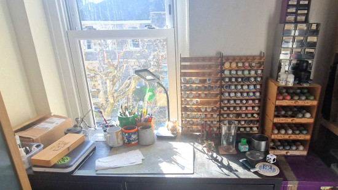
2. The hobby toolkit
Before we dive into the nitty gritty of how to build and paint your first minis, you're going to need minis, and paints and brushes to bring them to life. Our tutorial below lists which tools you'll need for each step - but first, what the hell are they anyway? What kinds of brushes and paints do you need for miniatures? How many do you need? How do you use them and care for them properly?
Luckily, the answers to these questions are way simpler (and cheaper) than you're probably thinking. Miniature paints and brushes are simple bits of kit, you don't need expensive ones or a huge arsenal, and a few basic techniques will ensure they work just right. Here's a brief crash course on tools, brushes, and paints - and our recommendations on what to buy when you start out.
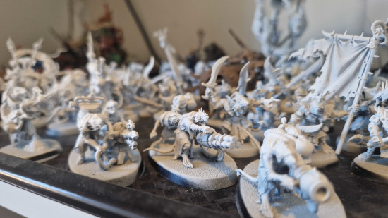
Miniatures - which ones should you get?
Let's make this real simple - get the miniatures you like best. The number one goal here is to end up with some painted tiny people you love, so follow your heart.
We'll make just one recommendation: steer clear of resin and metal miniatures when you're first learning, and stick to hard plastic (the material used for most Warhammer models). Metal and resin (especially the universally despised Citadel Finecast resin) are much more difficult and unforgiving to work with, require some different tools, and aren't covered by this guide.
Tools - what do you need?
Most miniatures - and almost all Warhammer kits - come as parts attached to a frame called a sprue, so you'll need a few simple tools to get them built and ready to paint.
There are only three essential assembly tools:
- Some clippers - small metal cutters, a.k.a. wire cutters, snips, or nippers, to cut the bits off the sprue.
- A hobby knife - a short, sharp, long handled craft knife or X-Acto knife, to cut away excess plastic from the bits.
- Glue - specifically 'plastic glue', or polystyrene cement, to stick the pieces together.
Here are some cheap, reliable options we can happily recommend:
Brushes
For all the techniques in this guide, from basic to advanced, you only need two paintbrushes:
- Your workhorse brush - A medium-sized brush with both a good, fine tip and a decent 'belly' to hold paint (size 3 or 4).
- Your drybrush - a larger, ideally quite stiff brush for easy highlights (can be as old and messed up as you like).
Army Painter's Basecoating brush is a good, cheap choice for your main brush - it'll set you back between about $6 and $11. You can also get their three-brush starter set for $18-25 (depending on sale price), which also gives you a nice drybrush and a fine detail brush.
A bewildering variety of brushes for minis are available, and it can be tempting to pay a premium for fancy, name brand brush sets made of Kolinsky Sable, or a precision engineered brush with a microscopically tiny tip. Those can be useful for some stuff, but when you're just starting out, they're an expensive distraction that'll make your life harder.
Just get a decent, size 3 or 4 pointed brush, and a cheap ugly one for drybrushing - you absolutely don't need to spend more than 15 bucks. For more info, read our full guide to the best miniature paintbrushes.
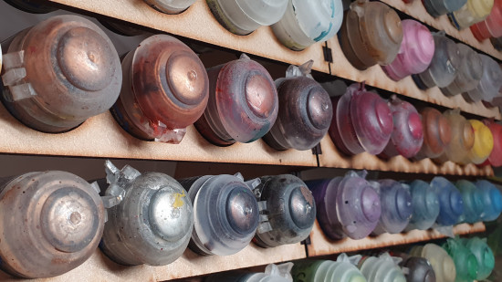
Paints
When choosing paints for your miniatures, there are two main ways to go: water-based acrylics (the main ranges sold by Games Workshop and competitors like Army Painter and Vallejo) and Contrast or Speed paints - newer, specially formulated paints designed to produce a detailed, 3D finish with a single coat.
Both have their advantages - you can read our separate Contrast paints guide for the best ways to use speed paints, and combine them with regular acrylics - but this guide focuses on the traditional acrylics method. It takes longer, but allows for more detail and variety in your models - plus, it'll teach you important skills that'll improve your painting.
Which paints do you need to buy?
Here's our genuine advice: don't buy loads of paints all at once - or even a starter set, unless you really like the colors in it.
Instead, once you've chosen some models, think of a simple color scheme you think would look cool (without browsing Instagram and looking at a bunch of spectacular pro paintjobs for 'inspiration') - then just get the Citadel paints that best match those colors.
At minimum, that will be:
- 1-2 base paints
- 1 shade
- 1-3 layer paints
If you like the effect you end up with - good news! You have enough paint to do a lot more models in the same scheme. If you don't, well, you can repeat the process with some more colors and try again - all without dropping $200 on a huge, desk-filling collection you won't use.
We recommend Citadel paints to beginners because they're reliably good quality; there's a huge range of colors and shades; and, because of their popularity, they're used in the majority of online tutorials you might like to follow in the future (including ours). They're not the cheapest, but not the most expensive either - and they'll make your beginner hobby simple.
When you're ready to try some different types, our guide to the best paints for miniatures covers loads of the top brands to consider.
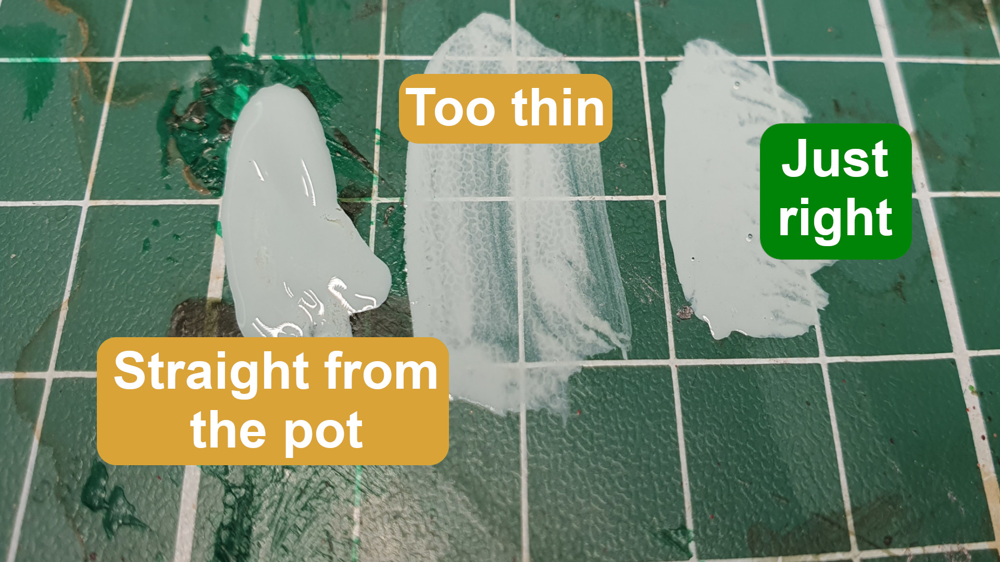
How to prepare and thin your paints
Now you've got your models and paints, there's one vital lesson to learn: Thin. Your. Paints.
Model paint straight from the pot is usually too thick for the job, and can cover up the fine detail on a model. You need to thin it, usually with water. Contrast paints need to be thinned with their own medium, while Enamel paint needs to be thinned with painters oil.
The best advice we've ever found on how to thin paint comes from miniature painter Tommie Soule: your paint should be as thin as possible without becoming translucent (and if you're using the advanced glazing technique, it should be thinner than that!). This video from Brushstroke is an excellent run-through, too:
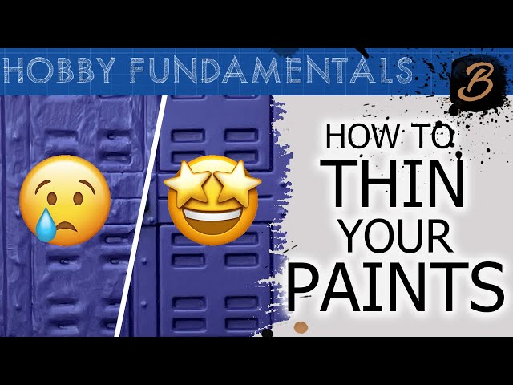
All paints behave a little bit differently, and it takes practice to learn where the sweet spot is when thinning each paint. Put paint on your palette and mix it with water. Is it translucent now? Add more paint. Does it feel too thick? Add more water. You'll get the hang of it.
OK, that's it for prep. Your tools are ready, and your soul is properly girded for the adventures to come. Time to start building and painting your miniatures!
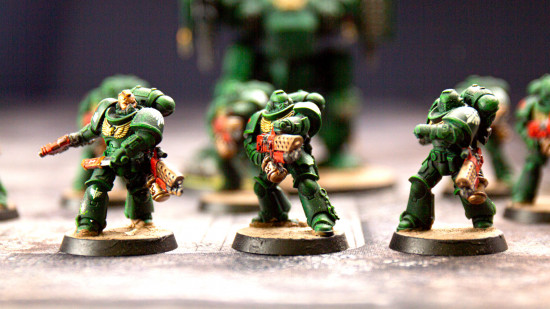
Basic painting - getting your minis table ready
Welcome to miniature painting boot camp - this section will walk you through how to get your miniatures built and painted to a good standard, in plain English, with no nonsense.
We recommend you stick this approach for your first few projects - partly because some of the essential skills do take a bit of practise to get right, and partly because getting models finished to a decent standard is a huge confidence booster that'll help you move forward!
In Basic mode, we'll cover:
- Assembling - snip, cut, and glue your minis together.
- Priming - preparing your minis for painting.
- Base coating - getting the basic color on each part of the model.
- Shading - adding shadow to darker parts of your models.
- Layering - painting raised areas in lighter colors.
- Drybrushing - the simplest methods of adding highlights.
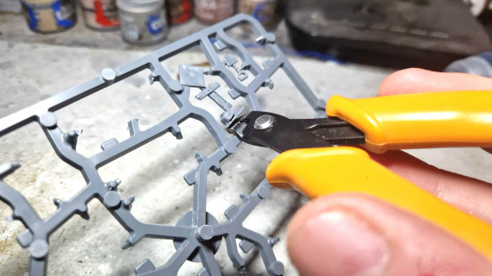
1. Assembling
Tools you'll need:
- Your chosen sprues (the plastic frames full of raw model bits)
- Instructions
- Plastic modelling glue (a.k.a. polystyrene cement)
- Plastic cutters
- A sharp scalpel or craft knife
- Super glue (optional)
Oh, building.
Some love it, some hate it. It can be a lot of fun if you're putting together a one-off character hero, but a slog if you're building 10, 20, or 100 of the same troopers. Nevertheless, you can't deny the satisfaction of seeing a simple, grey sprue turn into something imposing, dynamic and fully three-dimensional.
The key to building (as with a lot of the stages in this guide) is patience.
You can very easily make mistakes. Pay too little attention to your instructions and you can stick the wrong pieces together, in the wrong places, at the wrong times. This results in you having to rip your model apart for emergency reconstructive surgery, ruining its otherwise tidy looks by disrupting the still-drying plastic cement.
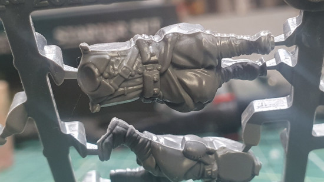
How to remove mould lines
It's also easy to overlook mould lines and sprue gunk (I have no idea what the technical term is for this, but the little bitty bits of plastic left behind when you snap your parts off the sprue) [this is also called 'flash' but for the life of me I don't know why - Ed.].
For that, you're best off grabbing your sharp scalpel and gently running the edge of the blade along the edge of your model to shave or scrape away any unsightly plastic.
This can be really hard to do on certain models like Age of Sigmar's Lumineth Realm-Lords, whose elegant spears and bows are spindly and weak. You're less in danger of breakage if you're handling thicker models like Space Marines - but still take care, as you don't want to damage the plastic.
Building in sub-assemblies
Pay attention to the assembly of your model, and think ahead. You'll preferably have a plan before you even start snipping plastic. Painting via sub-assembly (painting separate portions of the model on their own, before gluing them all together) is the best way to get the tidiest, cleanest results when painting, and that should be addressed at the build stage.
You might find that putting together the body of a soldier and keeping the arms and head separate gives you more room and maneuverability. Or if you're dealing with a big model, certain large parts can be painted separately to keep things easy to handle.
How to use plastic glue
Plastic glue, or Polystyrene Cement, works by dissolving the plastic on the parts of the model you're sticking together, and then evaporating, allowing them to resolidify. It bonds the two components on a chemical level and results in a strong joint.
To use plastic glue, simply apply it to one of the two surfaces you want to stick, then press them together. Depending on how the model is broken into parts you may have to support this to hold the components together.
Be sparing with plastic glue. Any overspill will melt the surface of your model. It will resolidify, but you might destroy fine detail, or leaving your finger prints in flat surfaces.
If in doubt, dry-fit your models without glue to test how they go together. This can reveal bits of sprue gunk left over that you need to remove.
If you're making very tiny models, such as Legions Imperialis kits, we recommend using Tamiya Extra Thin polystyrene cement. This is a very, very, very liquid plastic glue. Because it's so runny it evaporates very fast and you can't use it the normal way. Instead, dry-fit the joint you want to glue, and run the extra thin along the seam. It's so thin that it will wick into the join between the parts and quickly glue them together.
If you do have a glue-melting, pose-bending catastrophe, don't panic - like almost everything in the miniature-painting hobby, it can be rescued. Just stay calm, clean off any excess glue or melty plastic - then re-apply a (probably smaller) amount of glue and try again. You'll get there.
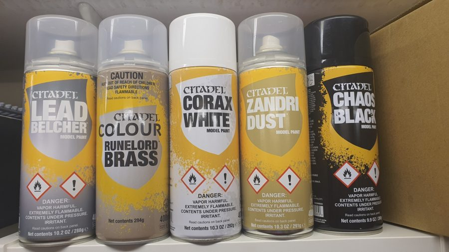
2. Priming (or Undercoating)
Tools you'll need:
- Primer (any color)
- Paintbrush (any kind, a suitable size for the model)
- Spray can (optional)
- Airbrush (optional)
- Bowl of clean water
Once your model is built - either completely or in sub-assemblies - you're ready to prime it.
Priming is an essential part of the painting process. Primer is a strong, adhesive undercoat of paint that is just stickier than anything else. It grips onto the smooth, glossy plastic of your model, and provides a much better surface for subsequent layers of paint to stick onto.
How to use brush-on primer
The first way to prime a model is via the brush - use thinned down primer to apply an all-over coat to your model. It takes some time, but this is by far the cheapest way and probably the method you'll use if you're a beginner. Just be careful not to clog the finer details of the model with paint, and to be consistent with your brushstrokes.
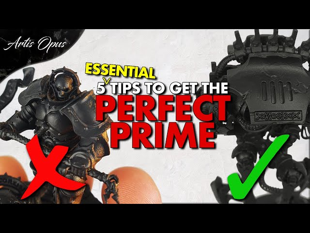
How to spray-prime miniatures
The second is via spray cans (such as those pictured above), which is quickest and simplest, especially if you're bulk-painting a whole army. Games Workshop does decent 'rattle-can' primers in a range of colours.
If you're using a spray primer, make sure you use it in a well-ventilated area, preferably outdoors, as the propellant the cans use isn't good for your health. You should wear a filter mask and disposable gloves. Make sure that you have covered up anything you don't want to get sprayed.
Make sure you really, really, really shake up your can before you use it, so that the paint is evenly distributed through the propellant. Test how it's going to spray on a piece of scrap cardboard, or a disposable cup. Spray from around six to eight inches away from the model.
Spray cans apply a fairly even and thin layer of paint - unless you absolutely blast the model with paint, in which case you risk hiding some of the fine details. It's better to wait for a paint layer to dry and reposition the model (or models) you're painting, than to go hog wild blasting the mini with more wet spray paint before the previous layer has dried.
How to prime miniatures with an airbrush
Now, airbrushing is a technique you can use in all kinds of ways. They can do all kinds of advanced techniques, but they're a massive time saver for priming and base-coating.
Many beginners are deterred from getting an airbrush, partly because a decent one will set you back at least $100+, and partly as they have a reputation for being finicky buggers. The truth is that they're easy to use, but a constant job to clean.
Undercoating with an airbrush is by far the best way to get a perfect, smooth finish of primer on your models. They're more predictable than the spray cans, and more versatile too - you get more for your money in the long term. We have a guide to the best airbrush for miniatures if you want recommendations.
You can see what a smooth finish you can get with an airbrush in the image below - these are Space Marine Bladeguard Veterans from the Warhammer 40k Indomitus box set.
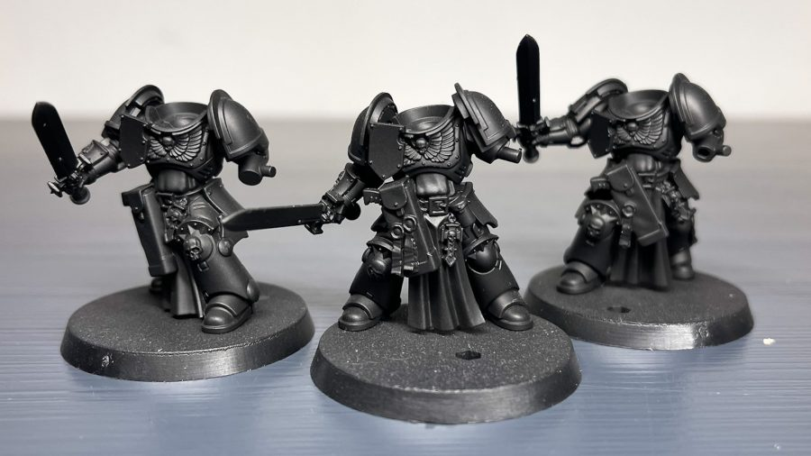
3. Basecoating
Tools you'll need:
- A paintbrush (any kind, a suitable size for the model)
- Spray can (optional)
- Airbrush (optional)
- Paint (any color)
Once you've primed, it's time to paint your base colors - your base coat - which is subtly different from the priming stage. Primer, or 'undercoat', provides a physical foundation that other paints will stick to. Base coats add the basic colors to the model that are the foundation of your shading and highlights later on.
If you use a colored primer, you don't necessarily have to basecoat all the parts of the model. For example, a black primer works fine as a basecoat for black Space Marine armor.
However, there are good reasons to basecoat your models even if you have used a colored primer, because it will make it easier to get a consistent result and to correct any mistakes you make later. For example, consider this Primaris Space Marine Lieutenant of the Black Templars chapter:
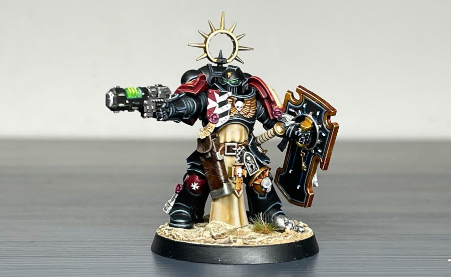
This was primed using Vallejo Black primer, through the airbrush. We then base-coated it, once again via the airbrush, this time with Citadel's Abaddon Black.
Why? Well, if we left it primed using the Vallejo Black, and made a mistake later in the painting process, painting over the error with Abaddon Black wouldn't match the Vallejo Black primer. You would be able to see a difference between the two types of black paint we'd used. Different paints of the same color are always a little different, and the changes will show.
Just like priming, you can base with a brush, can or airbrush. It's likely that you'll mix them all: using a spray can or airbrush to cover the larger areas, and a brush to basecoat smaller ones.
Whichever you choose, be careful not to clog details, just as before; you want to achieve smooth, consistent basic color on each distinct area of the model, which you'll bring to three-dimensional life later on.
The main features you want from a paint when basecoating a model are that it is consistent and opaque. Citadel 'Base Paints' are specially designed for this, but many other ranges work well: Army Painter, Two Thin Coats, Scale 75, P3, and Vallejo Game Color all fit the bill.
The key to success here is patience: the patience to thin your paint down with a goodly amount of water and lay down (at least) two thin coats of each base paint, letting each one dry on its part of the model, before applying the next.
About those paints: you want a good strong color as a base for each key portion of your mini, and you usually want to start with the model's biggest area of color first, then work up to the smaller details. For the Black Templar above, for example, the black armor is by far the dominant color.
After that major color is down, you start working at your mini with a brush (if you weren't before). For the Black Templar we added the cream of his tabard, followed by the gold, and then a range of other colors making up the finer details.
You can do all the base colors in one stage, or proceed through the other stages on one section of the model, before returning to base-coat the others later. It's really up to you - just stay precise and consistent, with thin paints.
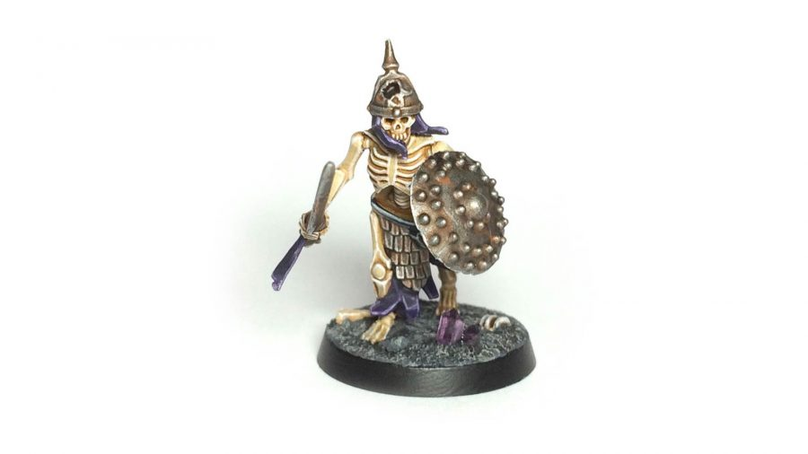
4. Shading
Tools you'll need:
- Paintbrush (any kind, a suitable size for the model)
- Shade, wash or contrast paint
- Bowl of clean water
Usually, the shading stage is when your model first starts to come together before your eyes. It's when you get all that lovely definition back, after spending a while dealing with solid blocks of flat colour. Look at the skeleton warrior above (not mine, this time, I'm afraid, but courtesy of a Warhammer Community post); see the shadows in between those rattlin' bones? That's shading, that is.
Shading is an essential process for any model, but once again there are many ways you can complete this key step. Whichever way, it's always gloriously satisfying once a model is shaded.
Shading with washes
The primary method I use to shade miniatures is using Citadel Shade washes. These are fantastic, low-viscosity liquids that come in a variety of different colors, and which easily run into all the recesses, nooks and crannies of your model. It gives your tiny fighters' armor panels separation, while also bringing out details on certain recessed pieces of plastic. You'll want to pair them with the right colors, and you'll quickly learn which Shades fit each color palette.
Also, pay attention to their different finishes - most Shades are a matte finish, but some of Citadel's Shades have a Gloss variant that can work really nicely over metallic paints.
It's important not to let washes run away with you (excuse the pun).Use sparing amounts on your brush, and don't worry if you have to repeat coats to add extra depth and emphasis. For certain materials, like large, flatter areas of cloth, you'll want to be especially careful with shades, so that they don't pool in one area and dry inconsistently.
In fact, for these types of materials, you're actually better off using one of a couple of alternative shading techniques.
Using layers for shading
You can create your own shade paints by thinning down paint with water or Citadel's Lahmian Medium. This can dry more consistently than a Citadel Shade, especially on flatter areas - provided you don't thin it down with with water so much that it loses its surface tension.
Using Contrast Paints for shading
Contrast Paints and similar 'speed paint' products are designed to base coat and shade a model in one coat, but you can use them as a shade over traditional paint jobs. They're highly pigmented, and their special medium causes them to suck up and become denser in the recesses of a model.
That could be just what you want - using a dark brown contrast paint to shade sandy fur on a model will have an immediate and striking result.
Shading top tips
Be sure to let your shades dry entirely before painting over them. If you disturb a Shade finish before it has dried, you will reveal the paint below in a concentrated area, and suddenly, in one infuriating instant, the illusion of beautifully painted metal, wood, or cloth is ruined.
Don't forget: you can also layer shades up gradually to create visual separation between light and dark. They're just magic, and learning to work with them is a world of painting fun and experimentation options that you need to explore.
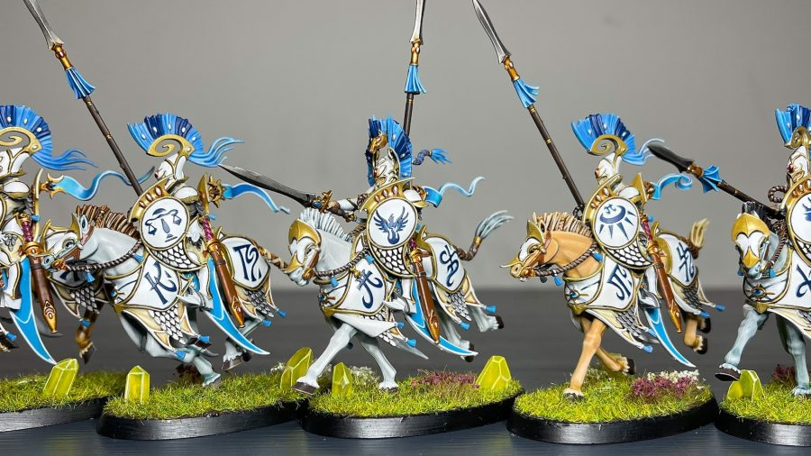
5. Layering
Tools you'll need:
- A paintbrush (fine tip, ideally of high quality)
- An arrangement of layer paints
- Bowl of clean water
We're into full swing with the model now. Layering is when we take that base coated, shaded plastic and add mid-tones over the top of it, to create even more depth.
It's essentially a form of highlighting, although the more extreme 'edge highlighting' technique is something we've broken out into its own category, coming next.
The best example of layering we've completed recently is for these Lumineth Realm-lord Vanari Dawnriders, as their horses have a lot of depth to them, but are smooth, organic beings, not hard-edged armor panels or swords. The layering on creatures like this has to be more subtle than the glint of light off the edge of a spear.
It's therefore important with layering that we use subtle blends and thin coats, in order to create as gradual a gradient as possible between light and dark.
There are obviously degrees of this, but you can see on the legs and neck areas how each horse has been base coated with a darker mid-tone, shaded to get all that lovely dark detail into the recesses of its flesh, and then layered back up with brighter and brighter colors (in smaller and smaller areas) until you have a nice range of tones throughout the whole model.
Take your time, use thin coats, and don't overload your brush - this will cause the layers to come off as too harsh and vivid. Also: never be afraid to start again, if you need to, by painting your base color back over and starting again.
As long as you've followed the priming and base coating stages, as well as kept your paint thin, you'll be fine. Like I said: if you're patient and careful, there's no miniature-painting mistake that can't be made into a marvel.
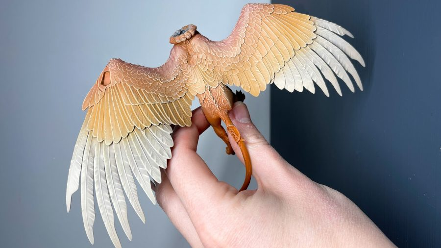
6. Drybrushing
Tools you'll need:
- A dry brush
- Your paint color
- Blotting or tissue paper
Drybrushing looks easy, but it can be really tough to get right in certain scenarios. However, for many types of models, it's an excellent way to sidestep the super-involved edge-highlighting process, do something more 'quick and dirty' and still get good-looking troops.
The technique is very simple. You want a brush (preferably an older one which doesn't need to keep a fine point) dipped in undiluted paint and then rubbed on a surface like tissue paper.
Working the paint into the bristles, you want to get rid of all the excess, before lightly, briskly drawing the brush across the model, to a point where you just catch the raised edges, but don't smear paint on the rest of it and ruin all your hard work so far.
The best way is to try it on the back of your hand first. If you're happy with the amount of paint on the brush, work it over the model in regular motions, being careful to apply the right amount of pressure. Too much and you'll end up smearing again. Too little and you just won't get the desired effect.
Feel free to load up your bristles with more paint when you need it, and as you work up the tones in the highlights, make sure you're catching finer and finer edges, rather than applying the dried paint over 100% of the surface every single time - this reduces the impact of gradient toning.
Drybrushing is perfect for items like metal guns, the entirety of Necron armies, and also for cloth - I much prefer the look of drybrushed cloaks, for example, to that of fine detail brush highlighting, as it adds more texture. The same goes for feathers; this Lumineth Realm-lord sculpt was blended using an airbrush, but the drybrushing technique has brought everything together to make it look like a cohesive entity.
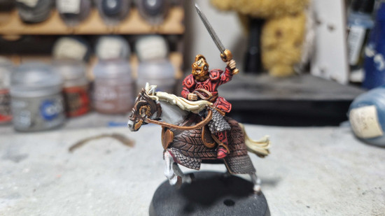
Intermediate painting - leveling up your minis
Models painted with our Basic mode method will already look great, with clean base colors and clear, three dimensional definition from the darker shades in the recesses, and brighter color layers on raised areas, accentuated with drybrush highlights. They'll look just fine on any tabletop. But we can go deeper.
Intermediate mode introduces two more techniques to give your miniatures more detailed and impressive:
- Edge highlighting - using fine lines of bright color for precise contrast.
- Basing - decorating the model's base to make it more authentic.
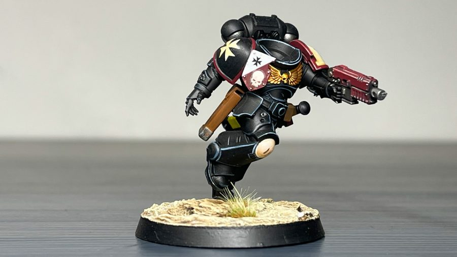
Edge Highlighting
Tools you'll need:
- A paintbrush (fine tip, ideally of high quality)
- An arrangement of layer paints
- Bowl of clean water
Edge highlighting is the sharp-edge layering I was talking about earlier. It's a transformational (but ultimately optional) effect to add to any model.
It is a perfect way of imparting an immense boost of depth and vibrancy to something like the power armor of an Astartes soldier, or adding reflective depth to metallic surfaces.
There are several steps to edge highlighting, and all models are different, so you may skip some or add others depending on your needs, but we'll focus on Space Marines for now. Their many-edged power armor suits offer the best all-round introduction to this technique.
Essentially, you are adding brighter paint to points on the model that would most reflect light. This means parts like the wrist panels, tops of the knee pads, edges of chest plates, and the ridged areas on a Space Marine's helmet. It allows your eyes to best parse the various definitions.
In the most time-consuming (but most effective) form of this technique, you want to do this in multiple stages, going from a chunkier highlight using a shade or two above your base coat, all the way to really thin, really bright extreme highlight colors for the very sharpest of edges.
Let's use those Black Templars as an example again. This aforementioned Lieutenant has been painted with an Abaddon Black base coat, highlighted with a chunky edge of Incubi Darkness, followed by a thinner highlight of Dark Reaper, followed by an even thinner highlight of Thunderhawk Blue. The most intense edges are finished off with a miniscule amount of Fenrisian Grey. It really helps to bring out the model's definitions and give it shape.
The best way to achieve the effect is with a sharp, fine-tipped brush. Your paint needs to be thinned down from pot-consistency, but not runny. And you should use the side, not the tip, of your brush to catch only the most raised edges of the model, where you can.
Now, you don't have to do it in so many stages. You can, if you prefer, do a simpler highlight with two, or even one highlight.. The effect is still impressive, as seen on the unfinished Black Templar trooper at the top of this section.
This is a one or two stage highlight with brighter colors, and you can see a similar effect on the red of his unfinished gun.
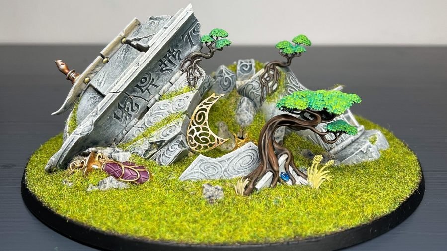
How to base miniatures
Tools you'll need:
- Several sizes of paintbrush, to reach all the crannies on your base
- At least one drybrush
- Basing materials such as grass 'flock', lichen etc
After base coating, shading, layering, and highlights, your model is all but finished. And I'm guessing it looks fantastic. There's just one final step - the base.
Basing is hard to decide on, and it's something you can spend hours debating with yourself. You want it to stand out, but not overpower the model itself, and you want it to be consistent across the models in an army. You also don't want it to be too hard to replicate multiple times!
Ultimately, you want to take all the techniques you've used painting your model and apply them to the base. The only difference is a couple of extra materials that can add real depth and realism to your models.
Shown above is a base I created for a Lumineth Realm-lord centerpiece model, Archmage Teclis. It encompasses practically all of the steps we've gone through so far - priming, basing, shading, layering, edge highlighting and drybrushing. There's even blending on the little blue gems.
The only addition here that isn't seen on the main model is grass flock. These sorts of materials are cheap and widely available, but can bring your armies together and make them look really striking.
Just remember: don't be afraid to experiment. Practice on an unused base if you want to, so that you don't end up having to restart on the base your model is on. That gives you the freedom to really work out what you want to do.
Advanced painting - add technical flair to create unique minis
Once you've mastered the basics and leveled up your models with delicious, sharp edge highlights and character-filled bases, it's time to hit the big time with higher-skill techniques that'll make your models truly jaw-dropping, with gorgeous colors and tiny details that'll turn an already impressive miniature into the pride of your collection.
Our Advanced mode tutorial adds three more difficult techniques:
- Glazing - using multiple shades of a paint to create smooth transitions and shine effects.
- Fine detailing - adding tiny amounts of paint in specific ways to create realistic effects like faces, eyes, transfers, and freehand.
- Weathering - using painting techniques and hobby materials to show wear and tear, damage, and environmental debris on the model.
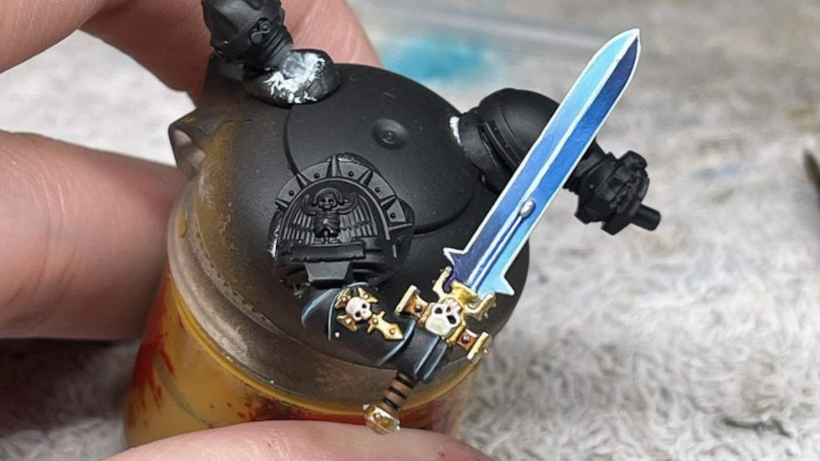
Color Blending
Tools you'll need:
- A paintbrush (fine tip, ideally of high quality)
- An arrangement of layer paints, ideally on a wet palette
- Bowl of clean water
- A lot of patience
Glazing
The toughest and most advanced version of layering is glazing - achieving perfect transitions between colours with incredibly thin layers. In Warhammer 40k, this can be used to create remarkable effects like the power sword above.
You're going to apply layers over a base coat that are so thin that they're translucent. This means you can subtly lighten the color in one spot, and darken it in another, creating very subtle and gradual color gradients. As the color intensifies, you'll start to define the spectrum from super-dark to super-bright, while working in as many gradient tones as you can in-between, until your transition is beautiful and smooth, and creates a striking, natural-looking contrast between light and dark.
When thinning down your paint, you don't want it so wet that you break the surface tension of the water. At that point it will become a wash that will follow gravity more than it will adhere to the surface of your minis. You only need a very small quantity of paint on your brush, too - excess fluid can cause the glaze to overflow and create darker puddles on your ini.
The term 'glazing' has several other meanings in fine art. So while you might see a big pot of 'acrylic glaze medium' in an art supplies store, that won't help you glaze your miniatures.
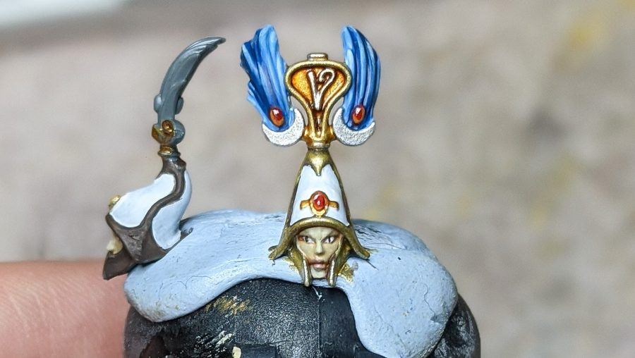
Fine Detailing
Tools you'll need:
- A paintbrush (fine tip, essential that it is high quality and precise)
- An arrangement of layer paints
- Bowl of clean water
A lot of your model is pretty much done now.
The rest is the special stuff - the fine detailing that'll really stand out.
These can range from wax seals on a Space Marine sergeant, to glimmering gems on an aelf's helmet, to scarred faces, moist eyes and the inked text on tiny scrolls. We'll go into these individually in more depth in future.
The overall point with any detailing is to keep taking your time. It's easy to start rushing as you approach the finish line, desperate to see your completed model in all its magnificence. But remember: thin paint in small areas is easy to fix, relatively speaking, so taking care still pays.
How to paint faces
The key detail lots of people want to get right is faces. And with good reason: a face is a focal point on a model, and is something the eye is immediately drawn to. They're notoriously a sticking point for some painters, but they aren't too difficult to nail, if you have good brushes and a steady technique applying color.
A face is just the same as any other part of your model. The scale is just much tinier.
Use paint sparingly, often slightly dabbing with your brush tip, rather than brushing the paint on in strokes. You can apply multiple different skin tones for the gradients if you want to. Lastly, with the eyes, you want a single tab of white paint in the recessed eye hole. Try and keep an outline of shade around the edges. This can then be pointed with a tiny amount of black paint for a striking stare.
It's this stage that makes you most want for good brushes. Use Raphael 8404s if you can - they're more widely available than other good brands like Artis Opus, and much more consistent in quality than Windsor & Newton Series 7s.
With the Lumineth Realm-Lord trooper face above, you can also see the perfect demonstration of why you paint in sub-assemblies. Doing these heads while they were attached to a model would be much more cumbersome - this provides more access to those tiny details.
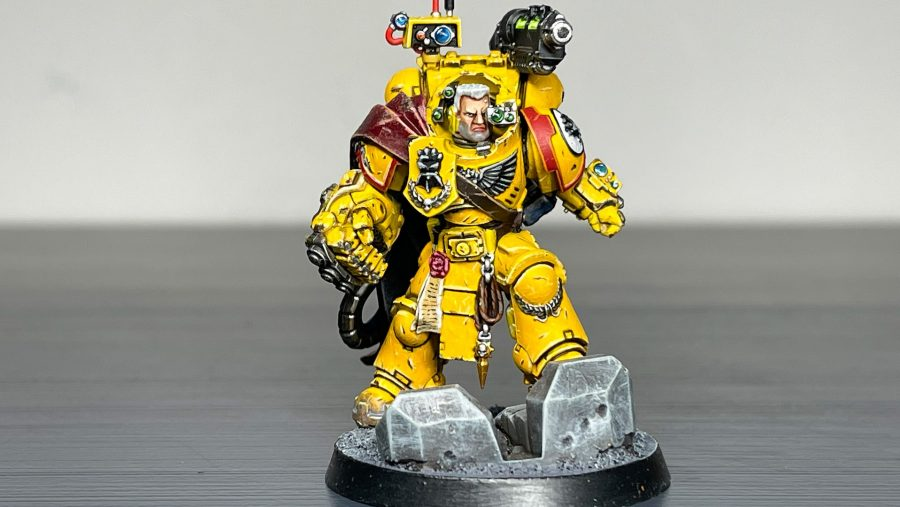
Weathering miniatures
Tools you'll need:
- A paintbrush (fine tip, ideally of high quality)
- An arrangement of layer paints
- Bowl of clean water
- Sponge (optional)
Weathering and battle damage is a totally optional step for any model, and fits your own tastes and the army in question.
It's perfect for models like orks and space marines, but doesn't fit the gleaming beauty of aelves, for example.
The key is still very much achieving a balanced contrast of light and dark. In this instance, we're using Tor Garadon, an imposing leader of the Imperial Fists Space Marines. His armor is perfect for weathering, as it looks exactly like the sort of suit that would've seen thousands of battles and taken countless batterings in the process.
We're working with yellow here, which is notoriously tough to get right, but the weathering technique can be applied to any other faction or color scheme you're working with - be it another soldier, or a tank, or whatever.
Paint chips and scratches
Going around the model, you want to very lightly dab, point and brush scratches all over the armor, using the extreme highlight color you used for the armor itself.
In this instance, it's the eye-wateringly bright Citadel paint Dorn Yellow.
Ideally, you want this paint to be thinned down a little - but not much, as you want it to be immediately noticeable, without running or splodging, forcing you to reapply your layer colors over the same area and start again.
The real key is scale: you don't want these scratches and marks to be too big otherwise it won't look convincing. Look at your model and think about how big they would be, in the context of his hands, legs etc.
Then, underneath these extreme light highlight scratches, overlapping them almost, you want to paint a dark color as a shadow. In this case, it's Citadel's Rhinox Hide.
The resulting effect is really smart. You can also use a sponge to dapple paint on in this way to get more random effects.
For models with darker paint-schemes on metal armor, like Black Templars, applying little scratches of bright metallic paint, like Citadel's Stormhost Silver, can also give the illusion that the faction colors have been scraped away to reveal the bare metal underneath.
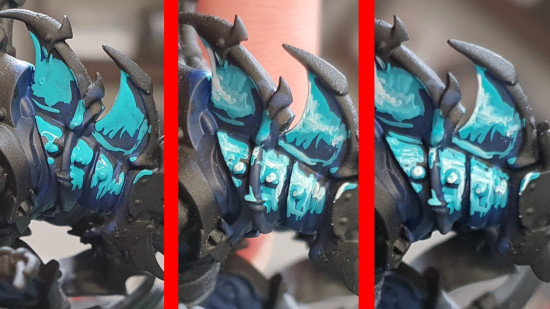
Non-metallic metal
Tools you'll need:
- A paintbrush (fine tip, ideally of high quality)
- Layer paints - at minimum a white, a black, and if you want to do gold, a brown and a yellow
- Bowl of clean water
Non-metallic metal painting is, as the name suggests, the art of painting metallic surfaces without using metallic paints. It's an exaggerated form of highlighting and shading, but instead of painting brighter colors to delineate the edge of a surface and darker colors to show recesses, you're using light and dark tones to mimic reflections on a surface.
Before attempting to paint NMM, it's worth looking for inspiration. Renaissance paintings use NMM to represent reflective metals, albeit on a 2D rather than a 3D canvas - load a picture up on your computer and use a color picker in Microsoft paint to isolate the different colors. Chrome or glossy paintwork on vehicles provide great real life references - pay particular attention to how much of the material is one or another colors.
Start with a dark base tone. Consider the position of the biggest light source - usually the sun, up above the model. Block in everywhere that the sun is going to touch with a medium tone. Work out where the light will be brightest and most direct, and layer that with your highlight tone. You can blend between these layers to whatever degree of fineness you want, but there can be very hard cut-offs between colors - remember that the goal is to bake in a set of reflections.
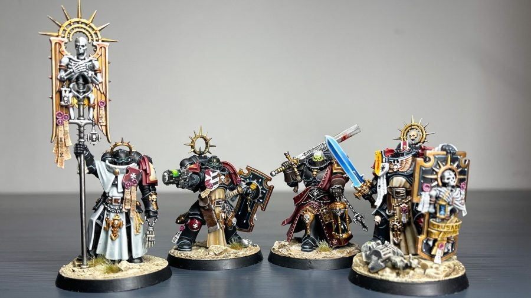
Mini painting FAQ
The techniques above are more than enough to help you through your first mini painting projects, and set you up to create some fantastic models - but once you're in the hobby, there's so much more to discover and try out! Read on for deeper dives into extra techniques and hobby tools, best practices for looking after your kit, and many more key painting questions answered.
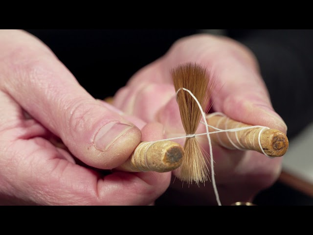
Techniques - how to use your paintbrush
Every top tier miniature paintbrush follows the design of the Windsor & Newton Series 7, which was originally commissioned by Queen Victoria - it's a very old design! It's a round pointed watercolor brush with kolinsky sable bristles. Cheaper brushes use synthetic materials but try to mimic the same properties. But why is that a good brush for painting miniatures?
Miniature paintbrush heads are made of many very fine hairs. This means the brush can trap a lot of liquid in its 'belly'. That's one reason you need to thin your paints: when you put the brush on the model, you don't just transfer the paint from the outside of the brush, you let the paint in the belly of the brush flow out onto the model.
Hold the brush as you would hold a pencil, between the thumb, index finger and middle finger of your dominant hand. The closer to the bristles you hold it, the more control you will have.
To load the brush with paint, draw the tip and some of the belly through properly thinned paint on your palette, then roll it to ensure it's evenly loaded with paint. Remember, you're filling the belly, not just the outside. Jabbing the brush carelessly into a paint pot will get paint stuck in places that will damage the brush long term.
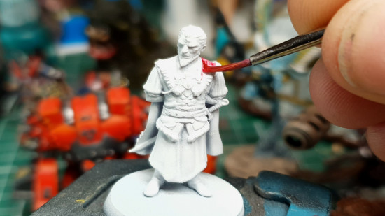
Miniature paintbrush heads come to a good pointed tip, which can be used for jabbing motions, for example when painting the pupil on a model's eye or the sparkle on a jewel. But the brushes are springy, not stiff, which means you can paint with the sides of the brush as well as the tip. This is what you'll use most of the time, even for high detail tasks.
When you want to paint a large surface, draw the belly of the brush over the model.
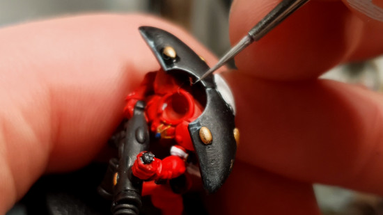
If you want to paint along an edge, set the side of the brush gently on the edge at a 45-degree angle, and draw it along.
When you want to change from one paint to another, make sure you give your brush a very good clean so there's no contamination. Metallic paints contain small shiny pigments that will contaminate your paint water, so it's a good idea to swap that out when you swap between metallic and non-metallic paint.
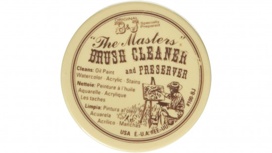
Techniques - how to care for your paintbrush
Miniature paintbrushes are simple tools, and they can last you many years - but only if you look after them properly. If you don't want to end up buying new brushes every few months when your bristles permanently lose their fine point - follow these easy tips:
- Try not to let paint get under the brush's 'ferrule', the metal band that holds the hairs together and connects them to the handle. Once paint dries up there it will splay the bristles out and spoil the brush tip.
- Clean your brush regularly while you're using it. Wash the bristles off in water and dry off on a paper towel before reloading the brush, to clear out any residual paint and stop it drying in between the bristles.
- At the end of a paint session, clean it with brush soap and water. If you're using a brush made from hair, hair conditioner can actually help preserve the bristles!
What makes miniature paints different from regular paints?
All paints are made up of a pigment - the bit that has the color in it - and a 'medium' - the liquid that makes the paint runny. Different mediums behave differently.
- Most model paints are water-based acrylics. They're opaque, so they cover up whatever you layer them on top of, and they can be thinned with water.
- Some paints use an alcohol medium so they can suspend different pigments: they make very shiny metallic paints, for example.
- 'Contrast' or 'speed' paints use a unique medium that sucks the pigment away from raised edges and into the recesses of a model as it dries, creating one-step shading and highlights. They are translucent, so whatever you paint them over will always show through.
- Enamel paints use an 'oil' medium and can't be thinned with water. Though they become dry to the touch very quickly, they don't set solid for weeks. You can add more medium to make the paint on the model 'live' again and work with it more.
How do you store and care for paints properly?
Unlike artists' paint tubes, paint for miniatures comes pre-mixed to a good consistency. But the medium can separate from the pigment in the pot, resulting in the paint splitting into a thin medium and a thick pigmented gunk.
Putting the lid back on the pot, giving it a good shake, and then a stir with a cocktail stick, will usually fix separation. Some paint pots contain small metal 'agitator' balls that make shaking the pot more effective. You can add your own ball-bearings to do the same thing - just make sure that you use stainless steel to prevent rust streaks.
As for storage, it's not something to stress too much about - but, in general, it's best to keep your paints at room temperature at all times. If they're hot, or in direct sunlight, they'll dry up much faster.
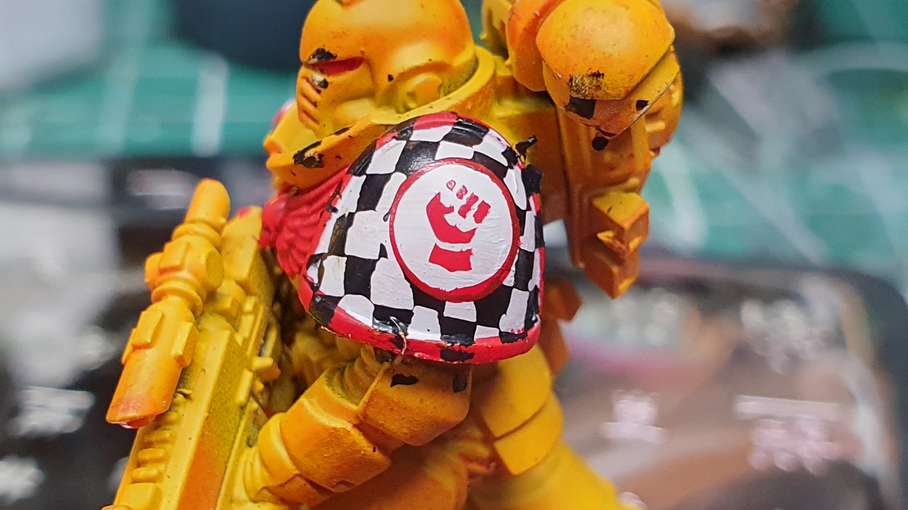
Stamping plates
If you want to apply designs to your models such as squad markings, but you don't enjoy using transfers, you could use use nail art stamping plates instead. Stamping plates and stamps are widely available in the nail art world, and Goblin Hobbies makes custom plates with useful designs for Warhammer hobbyists.
Using a stamping plate is simple but does take practise. The basics are that you apply a little nail polish on the design on the plate, scrape off the excess with a plastic scraper at a 45 degree angle, then gently roll the stamp over the design to transfer the design onto it. Then you line that up where you want on your model and press it into place. That's the basics - we have a separate feature exploring some of the complications associated with using this tool!
And that's our complete guide to painting miniatures, updated for 2025! Using this tutorial - plus a lot of time, patient experimentation, and practise - you can go from complete novice to top class painter, and have a hell of a lot of fun doing it. When you win your Golden Demon award, make sure to tell GW who gave you your first tips!
If you haven't already, come join the mini painting discussion in our Discord community to chat paint schemes, techniques, and show off your minis! If you're after the latest Games Workshop info, check out our guide to the latest Warhammer 40k codex releases, and bookmark our Warhammer 40k news page.
Originally published on Wargamer.


Leave a Comment